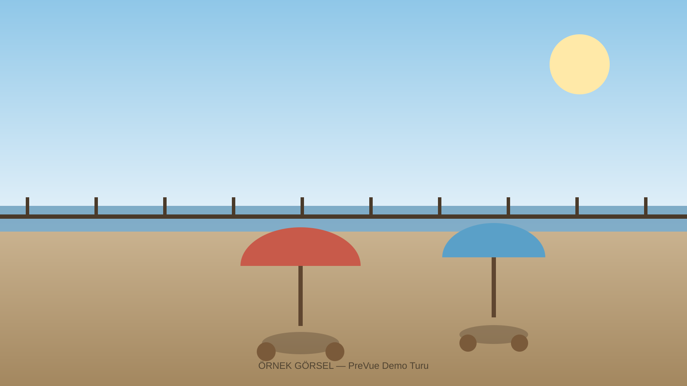

PreVue, işletmenin fotoğraf ve videolarını kullanarak gezilebilir bir ön izleme oluşturur. Müşterin masasını, odasını, manzarasını rezervasyondan önce görsün — daha bilinçli seçim yapsın, daha az "yanlış beklenti" ile gelsin.

İşletme sahibi için üç basit adım, müşteri için tek bir bakış.
Telefonla çekilmiş mekân fotoğrafları ya da kısa videolar yeterli — profesyonel ekipman gerekmez.
Sistem, alanları birbirine bağlayan gezilebilir bir önizleme kurar: masa, oda, manzara, ortam.
Rezervasyon öncesi mekânı gerçekten görmüş olur; memnuniyet artar, "beklenti uyuşmazlığı" azalır.
Fiziksel bir mekânı olan ve rezervasyon/ziyaret öncesi güven oluşturmak isteyen her işletme.
Teras mi, pencere kenarı mı, özel oda mı — müşteri seçsin.
Oda tipini ve manzarayı rezervasyondan önce net biçimde göster.
Fiziksel ziyaretten önce daireyi/villayı gezdirerek zaman kazandır.
Ürün ve mekân yerleşimini müşteriye önceden hissettir.
İşletme aboneliği + öne çıkarma + kullanıcı paketleri.